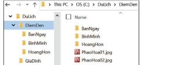
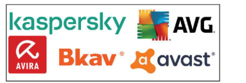
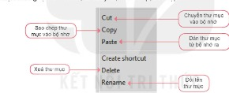

Dành cho giáo viên
Theo dõi lớp
| Học sinh / Nhóm | Đã nộp | Cập nhật |
|---|
Bước 1
1 Khởi động
Khám phá Hình ảnh khởi động
Trò chuyện Cùng An, Minh và Khoa
Đoạn trò chuyện gợi mở (không có trong SGK)
An: Chuyến đi Đà Lạt tớ chụp hơn 300 ảnh, giờ tìm ảnh ở hồ Xuân Hương mãi không thấy.
Minh: Bạn để tất cả ảnh chung một chỗ à?
An: Ừ, lẫn lộn hết cả.
Khoa: Hãy chia ra các thư mục theo ngày, theo địa điểm, đặt tên dễ hiểu là tìm ngay!
Minh: Bạn để tất cả ảnh chung một chỗ à?
An: Ừ, lẫn lộn hết cả.
Khoa: Hãy chia ra các thư mục theo ngày, theo địa điểm, đặt tên dễ hiểu là tìm ngay!
Hoạt động 1 Đặt tên thư mục
Trong một chuyến du lịch cùng gia đình, em đã ghi chép lại thông tin và chụp nhiều ảnh kỉ niệm. Các hình ảnh và thông tin đó cần được lưu trữ. Hãy vẽ sơ đồ cây thư mục để chứa các tệp dữ liệu và đặt tên cho các thư mục đó sao cho dễ tìm kiếm và truy cập.
Ghi bài Khởi động
Sau khi thầy cô chốt, em chép nội dung dưới đây vào vở.
Bước 2 · Hình thành kiến thức mới
2.1 Tên tệp và thư mục trong máy tính
Đọc hiểu Đặt tên tệp, thư mục
Đọc mục 1 (SGK trang 13). Khi làm bài tập dự án, số lượng tệp và thư mục có thể tăng lên nhanh chóng. Nếu không được tổ chức lưu trữ tốt, em có thể mất nhiều thời gian để tìm kiếm những gì mình cần. Trước khi lưu trữ, dữ liệu cần được phân loại để việc lưu trữ có trật tự, giúp việc tìm kiếm dữ liệu nhanh hơn. Nên đặt tên tệp và thư mục đơn giản, dễ hiểu, nhất là khi làm việc trong một dự án nhóm, để mọi thành viên đều có thể dễ dàng tìm thấy những gì họ cần. Hình 3.1 là ví dụ về một cách đặt tên tệp, thư mục và thư mục con khá hợp lí, vì nó cho em biết trong đó chứa những gì.
Các chương trình máy tính cũng được lưu trữ dưới dạng tệp giống như tệp dữ liệu. Trong hệ điều hành Windows, chúng thường có phần mở rộng .exe, .com, .bat, .msi. Không nên xoá hay di chuyển những tệp này nếu không có lí do xác đáng vì chúng có thể cần thiết với một số hoạt động của máy tính.
Các chương trình máy tính cũng được lưu trữ dưới dạng tệp giống như tệp dữ liệu. Trong hệ điều hành Windows, chúng thường có phần mở rộng .exe, .com, .bat, .msi. Không nên xoá hay di chuyển những tệp này nếu không có lí do xác đáng vì chúng có thể cần thiết với một số hoạt động của máy tính.

Câu hỏi SGK trang 14
Ghi bài 1. Tên tệp và thư mục
Sau khi thầy cô chốt, em chép nội dung dưới đây vào vở.
Bước 2 · Hình thành kiến thức mới
2.2 Các biện pháp bảo vệ dữ liệu
Hoạt động 2 Bảo vệ dữ liệu
Máy tính của em có nhiều dữ liệu quan trọng. Em muốn bảo vệ dữ liệu trong máy tính của mình thì: a) Em sẽ chọn cách bảo vệ dữ liệu nào? b) Tại sao em chọn cách đó?
Đọc hiểu a) Sao lưu dữ liệu
Đọc mục 2a (SGK trang 14). Lưu trữ thông tin trong máy tính và trên Internet có nhiều rủi ro. Dưới đây là một số biện pháp chính để bảo vệ dữ liệu.
Dữ liệu cần được sao lưu thường xuyên. Sao lưu dữ liệu là tạo ra bản sao các tệp và thư mục rồi lưu chúng lên một thiết bị lưu trữ. Thiết bị lưu trữ đó cho phép em khôi phục lại dữ liệu nếu có điều gì đó xảy ra với bản gốc.
Dữ liệu cần được sao lưu thường xuyên. Sao lưu dữ liệu là tạo ra bản sao các tệp và thư mục rồi lưu chúng lên một thiết bị lưu trữ. Thiết bị lưu trữ đó cho phép em khôi phục lại dữ liệu nếu có điều gì đó xảy ra với bản gốc.
- Sao lưu cục bộ: bản sao được đặt trên cùng máy tính chứa bản gốc hoặc trên các thiết bị lưu trữ như ổ cứng ngoài, USB,… Cách này giúp phục hồi nhanh chóng. Tuy nhiên, nếu xảy ra rủi ro cho thiết bị lưu trữ hoặc máy tính bị thất lạc, bản sao sẽ bị mất theo bản gốc.
- Sao lưu từ xa: bản sao được đặt bên ngoài máy tính chứa bản gốc, ví dụ ở một máy tính khác hoặc được đưa lên Internet nhờ công nghệ đám mây. Nếu máy tính bị hỏng thì bản sao lưu vẫn an toàn.
| Thiết bị lưu trữ | Ưu điểm | Nhược điểm |
|---|---|---|
| Thẻ nhớ, USB | Nhỏ gọn. Tiện sử dụng. Khá bền. | Dễ bị thất lạc. Dễ lây nhiễm virus. Dữ liệu dễ bị hỏng nếu sử dụng không đúng cách. |
| Đĩa quang (CD, DVD) | Chi phí thấp. Khó bị nhiễm virus. | Dễ hỏng dữ liệu. Dung lượng nhỏ. Khó ghi dữ liệu vì phải có đầu ghi. Khó cất giữ. |
| Ổ cứng ngoài | Dung lượng lớn. Tiện sử dụng. | Kích thước to và nặng, khó mang theo. Có thể hỏng dữ liệu nếu bị rơi. |
| Lưu trữ nhờ công nghệ đám mây | Truy cập được bằng bất kì máy nào có kết nối Internet. Sao lưu từ xa. | Cần kết nối Internet. Dịch vụ có thể không đáng tin cậy. Có thể bị tin tặc tấn công. |
Đọc hiểu b) Mật khẩu · c) Phần mềm diệt virus
Đọc mục 2b (SGK trang 15). Để bảo vệ dữ liệu, tránh bị người khác truy cập trái phép, em nên đặt mật khẩu cho tài khoản của mình trên máy tính. Tên tài khoản thường được đặt dựa trên tên người sử dụng, còn mật khẩu cần đặt theo cách riêng để giữ bí mật cho mình. Mật khẩu là một tài khoản bảo mật và nó có thể được thay đổi để người khác khó đoán.
- Mật khẩu mạnh: dài ít nhất tám kí tự; bao gồm cả chữ số, chữ in hoa, chữ thường và các kí hiệu đặc biệt như @, #,…; không phải là một từ thông dụng.
- Mật khẩu yếu: tên mình hoặc tên người thân; từ hoặc cụm từ đặc biệt (ví dụ: “Hà Nội”, “12345678”); số điện thoại hoặc ngày sinh.
Bảng kiểm tra mật khẩu
Chưa nhập.
- Dài ít nhất 8 kí tự
- Có chữ số
- Có chữ in hoa
- Có chữ thường
- Có kí hiệu đặc biệt (@, #, !,…)
- Không phải từ, dãy số thông dụng
Chỉ gõ thử, không nhập mật khẩu thật của em. Trang này không gửi nội dung ô này đi đâu.
Đọc mục 2c (SGK trang 15). Có những phần mềm độc hại có thể làm hỏng dữ liệu và các chương trình trong máy tính. Phần mềm độc có nhiều loại khác nhau như virus, sâu, phần mềm gián điệp,… Phần mềm diệt virus được thiết kế để phát hiện và diệt virus, phát hiện và chặn các cuộc tấn công từ phần mềm độc hại. Một số hệ điều hành được trang bị sẵn phần mềm diệt virus, chẳng hạn Windows Defender của Windows. Để dữ liệu được an toàn, em cần đảm bảo máy tính của mình đã được cài phần mềm diệt virus, phần mềm đó phải thường xuyên hoạt động và được cập nhật.

Câu hỏi SGK trang 16
Ghi bài 2. Bảo vệ dữ liệu
Sau khi thầy cô chốt, em chép nội dung dưới đây vào vở.
Bước 2 · Thực hành
2.3 Thực hành: Quản lí dữ liệu trong máy tính
Nhiệm vụ Tạo và sắp xếp cây thư mục
Em hãy tạo cây thư mục như Hình 3.3 và thực hiện:
- Đổi tên thư mục “HoangHon” thành “ChieuToi”.
- Di chuyển các tệp và thư mục con của thư mục “BinhMinh” sang thư mục “BanNgay”.
- Xoá thư mục “BinhMinh”.
- a) Tạo thư mục: trên màn hình nền, nháy nút phải chuột, chọn New/Folder. Thư mục mới có tên New Folder, em gõ tên mới, ví dụ “DuLich”. Trong DuLich, tạo tiếp các thư mục con theo cách trên cho đến khi hoàn thành cây thư mục.
- b) Đổi tên, di chuyển, sao chép, xoá: nháy nút phải chuột vào thư mục, chọn Rename để đổi tên; Cut và Paste để di chuyển; Copy và Paste để sao chép; Delete để xoá. Thực hiện tương tự với tệp.

Bảng mô phỏng File Explorer (cây thư mục như Hình 3.3)
Bấm vào một thư mục hoặc tệp để chọn, rồi bấm lệnh.
- Đổi tên HoangHon thành ChieuToi
- Di chuyển các tệp và thư mục con của BinhMinh sang BanNgay
- Xoá thư mục BinhMinh
Ghi bài 3. Thực hành
Sau khi thầy cô chốt, em chép nội dung dưới đây vào vở.
Bước 3
3 Luyện tập
Luyện tập Câu hỏi SGK trang 17
Ghi bài Luyện tập
Sau khi thầy cô chốt, em chép nội dung dưới đây vào vở.
Bước 4
4 Vận dụng
Vận dụng Sao lưu thư mục DuLich
Ghi bài Vận dụng
Sau khi thầy cô chốt, em chép nội dung dưới đây vào vở.